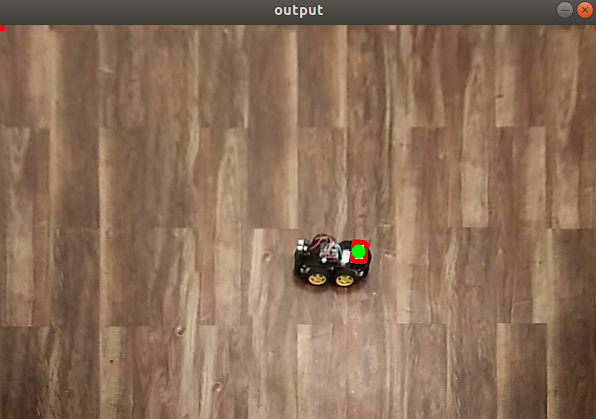

DPD Maneuver for a PALLET JACK
The project is aimed towards
facilitating autonomy to an
existing warehouse electric
Pallet Jack. The vehicle used is
meant to be manually operated.
Thus, as a first step the
necessary hardware and
software changes for the
drive-by-wire system were
incorporated. To control the pallet jack a kinematic model
was used which was also validated using a motion capture system (VICON). Three
trajectory controllers namely Model Predictive Controller (MPC), Trajectory
Optimised Linear Quadratic Regulator (T-LQR) and PID were implemented and
compared under full state feedback from VICON. Finally a complete pallet DOCKING-PICKUP-DROPOFF (DPD)
was demonstrated using a pure pursuit based docking behaviour. The
future works include achieving the same functionality using just the onboard
sensors like LIDAR, stereo camera and upright camera, for robust low cost indoor
autonomy. Details of the implementation are of proprietary nature and hence the code can't be shared.
DOCKING USING TRACKING CAMERA
As a next step towards platform independent indoor autonomy , we demonstrate Docking with
a pallet using just the state data acquired from Intel RealSense Tracking Camera. The camera
tracks features in the environment and use that to ascertain its pose information. Its prone to
fast motions and provides quite robust state estimation. The video shows successfull docking with the pallet with a fair degree of
accuracy.
WAY POINT FOLLOWING
The above demonstration showcases the ability of our pallet jack to effectively navigate between waypoints. In this case there is sufficient buffer
given to the system to determine the position of the marker which decides the next waypoint. The Pallet Jack uses MPC to effectively plan a trajectory
between waypoints. Only when the previous waypoint is reached , the next waypoint is followed. The state feedback here is obtained using a Motion Capture
System.
Indoor Perception System : VISPER

Inspired by the Motion capture system at the lab I am working, I very much wanted to have a similar system at my home for easy experimentation. Because the VICON
motion capture system is pretty expensive I utilised what I already had i.e. an android phone. Using simple computer vision techniques and making use of Open-cv I ended up making
an indoor perception system called VISPER. I utilised it to track my differential drive robot shiro in real-time.